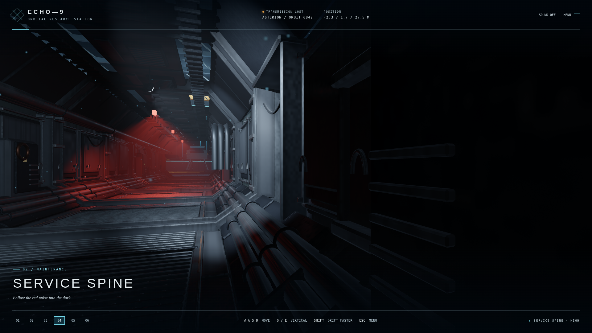
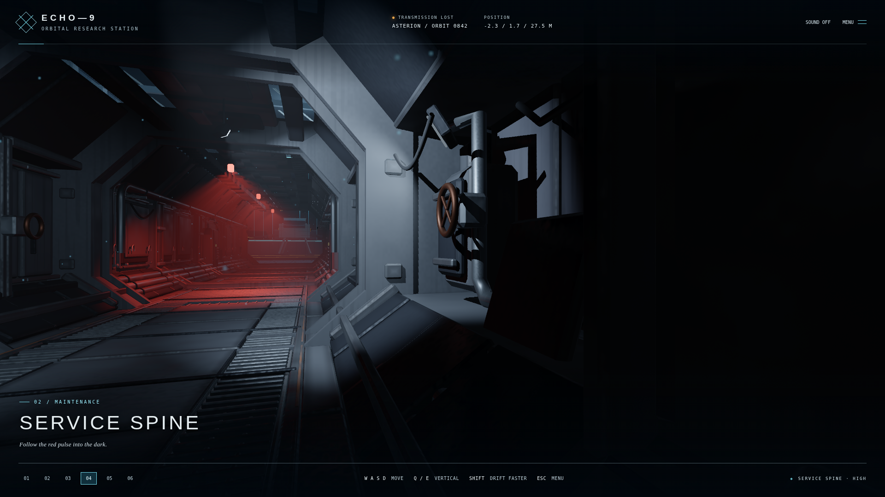
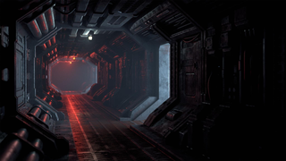
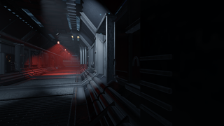
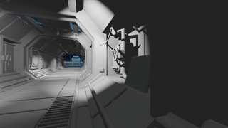
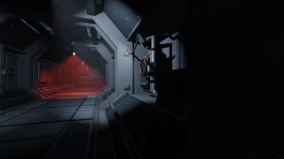

ECHO-9 — etap4A: scenografia
PROJECT ECHO-9 — scenografia korytarza, etap4A
Referencja filmowa i rzeczywisty render. Bez retuszu i korekcji obrazu. Akceptacja kierunku artystycznego pozostaje decyzją Adriana.
Referencja filmowa Oryginał2048×1152; wyłącznie dokumentacja.4A — geometria z obecnym światłem i materiałamiOryginał1920×1080, High/DPR1/4×MSAA, t12s, stała kamera i seed.
Oryginał2048×1152; wyłącznie dokumentacja.4A — geometria z obecnym światłem i materiałamiOryginał1920×1080, High/DPR1/4×MSAA, t12s, stała kamera i seed.
Iteracja3 / zatwierdzony etap4A — ta sama kamera
Pozycja[−2.35,1.72,27.5] → [−13.5,1.78,61], pionowy FOV64°, seed15515657. Obecny tor materiałów, oświetlenia i HDR zachowany.
Iteracja3 — stan bazowy8726d384A — nowa scenografia, bez HUD
Iteracja3 /4A — wariant z HUD
Ta sama kamera i niezmieniona nakładka interfejsu. Ocenę samej sceny należy prowadzić przede wszystkim na obrazach clean.
Iteracja3 — HUD
4A — HUD
Rzeczywista geometria: neutralny blockout / produkcja
Ten sam mesh, kamera i czas. Osobny diagnostyczny HTML zastępuje materiał jednolitą szarością i neutralizuje kolory istniejących świateł; zachowuje rzeczywiste cienie. Mgła i bloom wyłączone tylko w diagnostyce. Produkcyjny renderer bez przebudowy.
4A — neutralny materiał diagnostyczny4A — istniejące materiały i oświetlenie
Sylwetka i trzy plany przy szerokości320px
Miniatury wyłącznie pomniejszają rzeczywiste obrazy; bez retuszu, wyostrzania i zmiany ekspozycji. Ocena geometrii nie zastępuje akceptacji materiałów i światła.
Referencja
Iteracja3
4A neutralny
4A produkcyjny